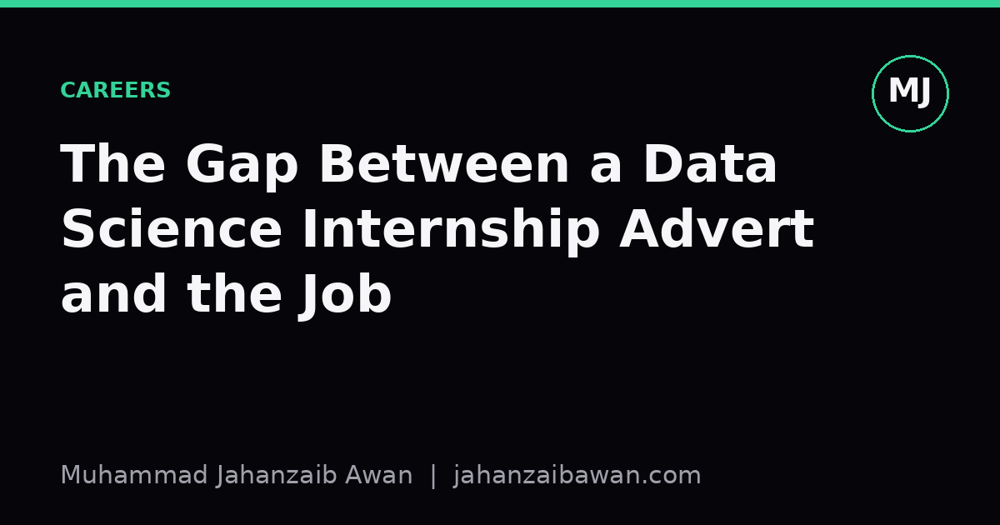

The Gap Between a Data Science Internship Advert and the Job
Machine learning models and neural networks feature heavily in the job posting, but the daily work is mostly something else entirely.

What the advert says versus what lands in your inbox
Open any data science internship listing and you will see a fairly consistent script: build predictive models, apply machine learning to real business problems, work with neural networks and natural language processing, generate insights that drive decisions. It reads like the job is one long modelling competition, where the main skill required is picking the right algorithm and tuning it well. For anyone coming from a masters course full of gradient boosting and transformer architectures, this sounds like a natural extension of the coursework.
The actual first week usually looks different. You get access to three separate databases that do not agree with each other, a spreadsheet someone built in 2019 that nobody wants to touch, and a Slack channel where the main question is why the customer count in one dashboard is off by four thousand compared with another. Nobody has asked you to build a model yet. They have asked you to work out why two reports disagree, and that turns out to take most of the week.
This is not a failure of the company or a bait and switch by the recruiters. The advert describes the interesting five percent of the role because that is what attracts applicants. The other ninety five percent, the plumbing that makes the interesting part possible, does not fit neatly into a bullet point, so it gets compressed into vague phrases like 'work with large datasets' or 'collaborate with cross functional teams'. Those phrases are doing a lot of quiet work.
A worked example: the churn model that never gets built
Say the brief is to predict which customers are likely to cancel a subscription in the next thirty days, a classic internship task. In the version implied by the advert, you spend your time comparing logistic regression against random forests against a small neural network, checking ROC curves, and presenting the winning model to stakeholders in week four. In practice, the first two weeks go entirely into a much less glamorous question: what does 'cancel' actually mean in this dataset.
It turns out there are three different cancellation events in the source system. Some customers cancel and immediately resubscribe within 48 hours because of a billing glitch. Some are cancelled automatically by the finance team after a failed payment, then reinstated once the card is updated. Some genuinely leave. If you naively label all of these as 'churn' and train a model on it, you might get an AUC of 0.81 that looks respectable in a slide deck, but the model is partly learning to predict billing failures rather than genuine disengagement, which is a completely different business problem with a different fix.
Sorting this out means sitting with the billing team, reading through edge cases one by one, and agreeing a definition that the business will actually trust. Only after that negotiation, which might consume half the internship, do you get to the point of building a model at all, and by then the modelling itself is almost an afterthought: a gradient boosted tree with sensible features will do the job, and the choice of algorithm barely moves the needle compared with getting the label right in the first place. The advert never mentions any of this, because 'agree a working definition of churn with the finance team' does not sound like a machine learning internship.

Why the gap exists, and why it is not really a problem
Part of the gap comes from how job adverts are written. They are marketing documents aimed at candidates, not accurate job descriptions aimed at managing expectations. The person writing the advert is often in HR or a hiring manager under time pressure, reusing language from a template that was written for a more senior data scientist role. Nobody sits down and asks what an intern will genuinely spend their hours on, because that requires admitting the answer is mostly data wrangling, documentation, and meetings.
Another part of the gap is structural. Real organisations do not have clean, labelled datasets sitting around waiting for a clever algorithm. They have operational systems built for running the business, not for analysis, and the data these systems produce is a byproduct rather than a designed asset. Turning that byproduct into something a model can learn from responsibly is most of the actual intellectual work in data science, even though it rarely appears in the marketing copy. Anyone who has tried to build even a simple leakage-aware train and test split on real transactional data knows how much of the difficulty is in understanding what each column actually represents, not in choosing between two algorithms.
It is worth being honest that this gap is not really a scandal, more a mismatch of vocabulary. The skills that matter, being sceptical of a suspiciously clean result, checking whether a metric means what people assume it means, tracing a number back to its source before presenting it, are genuinely data science skills, they are just not the ones people picture when they imagine the field. An intern who spends six weeks reconciling two databases and produces a clear, well documented explanation of why they disagreed has probably added more value than one who trained five models nobody trusts.
What to actually do with this knowledge
If you are applying for these roles, read the advert for the vocabulary of the industry rather than a literal job description, and go into interviews prepared to ask what a typical week actually looks like, how much time goes into data preparation versus modelling, and whether there is an existing pipeline or you would be building one from nothing. Hiring managers respect this question because it signals you understand the job rather than the marketing.
Once you are in the role, treat the unglamorous work as the main event rather than an obstacle blocking you from the real work. The habit of checking definitions, questioning where a number comes from, and documenting your reasoning so a colleague can follow it in six months is exactly what separates a useful junior data scientist from one who produces impressive looking numbers that quietly do not hold up. The modelling skills from your coursework are still valuable, they are just a smaller slice of the job than the advert suggested, and the sooner you make peace with that, the more useful your internship becomes.